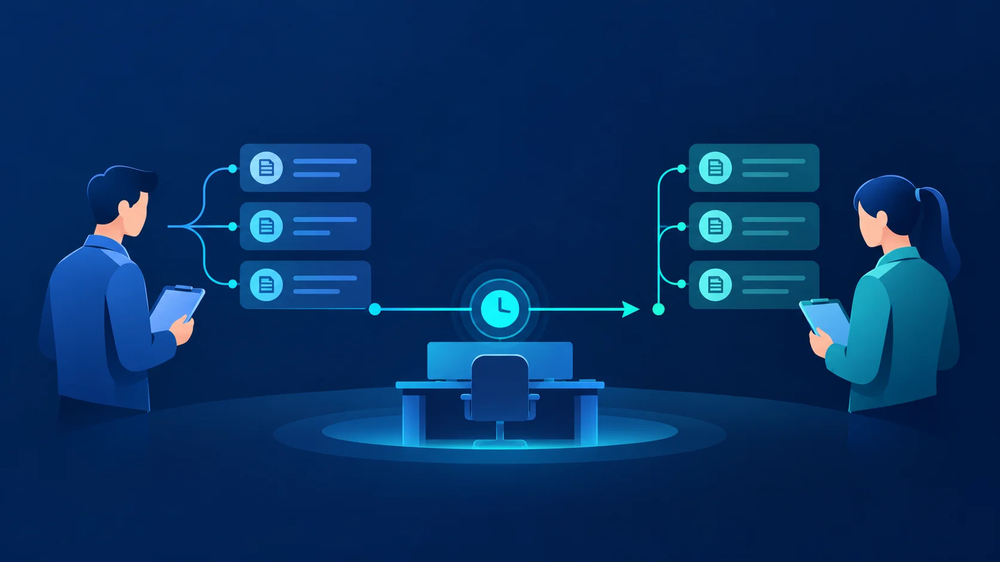

Article · 飞函
Article · 飞函
共用值班账号的追责盲区与身份规范
夜班收到故障告警，值班人员用部门共用账号登录处理；早班接手后沿用同一账号继续操作。第二天复盘时，日志显示的是一个账号，却无法直接回答：谁确认了告警，谁修改了配置，谁批准了恢复？
共用账号省去了交接时切换身份的动作，也把几个人的操作压进了同一条身份记录。问题往往在需要还原过程时才显现。
共用账号会留下哪些盲区
操作者难确认。 系统记录了账号和操作时间，不等于记录了实际操作者。即使排班表显示当时由谁值班，临时换班、远程协助和多人同时在线仍可能让记录对不上人。
权限难收回。 只要多人知道同一组凭据，人员离岗、轮岗后就难以判断谁仍能登录。修改密码可以切断旧凭据，却也会影响正在值班的人。
交接责任难划清。 告警的发现、判断、处置和复核可能由不同人完成。如果这些动作都落在同一个账号下，事后容易把操作记录误当成完整的责任链。
异常难定位。 当一项操作发生在非预期时段，仅凭共用账号的日志，难以区分正常代班、凭据外借和未经授权的使用。排查不得不再拼接排班、聊天记录和人工说明。
这些盲区不意味着日志没有价值，而是提醒企业：日志中的账号必须能稳定对应到人，交接过程也需要单独记录。
把“值班岗位”与“登录的人”分开
可以让值班工作持续由岗位承接，同时要求每位值班人员使用自己的身份登录。岗位决定当班任务和所需权限；个人身份回答是谁执行了操作。交接时，上一班记录待处理事项和已采取的动作，下一班明确接手；涉及配置变更等关键动作，再留下操作人与复核人的记录。

落地时可从四个动作开始：
- 盘点共用账号。 列出使用系统、知晓凭据的人员、可执行的操作，以及现有日志能记录到哪一步，优先处理可修改配置或接触敏感数据的账号。
- 改用个人身份承接值班。 为当班人员分配完成任务所需的权限，并设置明确的开通、调整和回收责任人。临时代班也应留下人员与时段记录。
- 规范例外交接。 对暂时无法取消的共用账号，限定使用范围和保管人，记录领用、使用时段及关键操作，设定改造期限。共享凭据不宜成为长期默认方式。
- 用记录复盘流程。 定期抽查排班、交接、操作与复核记录能否互相印证；发现断点后，调整权限或交接步骤。
在协同环节，飞函可用于承接值班沟通，并结合按部门、角色或人员分配权限、设备授权验证、IP 访问限制和消息审计等能力，帮助企业管理协同范围与留存沟通记录。具体业务系统的个人登录和操作日志仍需在相应系统中落实；协同记录可以补足处置背景，不能代替业务系统对实际操作者的识别。
规范值班身份的目标，是让告警从谁接到、谁处理到谁复核都有迹可循。当岗位可以交接、身份始终对应到人，企业才更容易在故障复盘时还原过程，也更容易及时收回不再需要的权限。